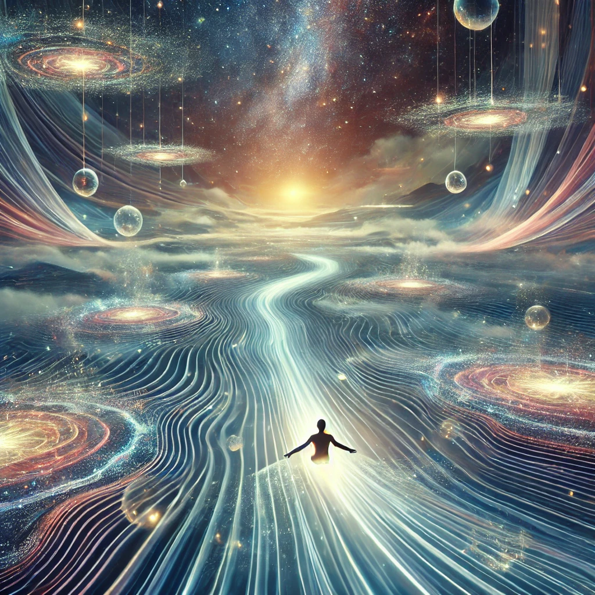

The river of light carries you effortlessly, its current guiding you through shifting landscapes of surreal beauty. You feel yourself merging with the flow, your thoughts quieting as you become one with the rhythm of existence. Time loses its meaning, and all that remains is the present moment.
The voice of the unseen speaks gently, blending with the hum of the current:
“Flowstate is the art of being and doing as one. To master it is to transcend resistance and align with the infinite. What will you create from this harmony?”
The current slows, depositing you onto a glowing platform suspended in the void. Around you, the flow shapes itself into three forms, each representing a way to use your mastery of the flowstate.

How will you use the flowstate?